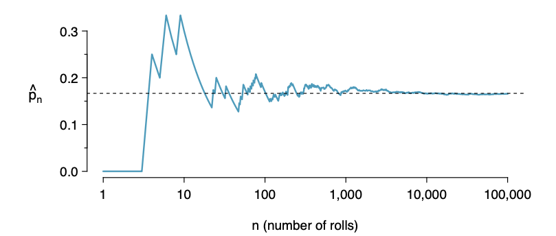
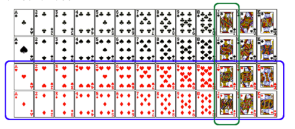
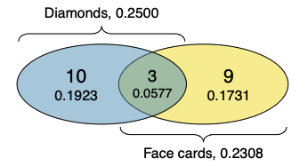

Estadística I
Clase 10: Introducción a la Probabilidad
Universidad Central de Venezuela- Escuela de Economía. 2025-1
Nota
Tip
Todas las láminas que se muestran a continuación pertenecen al proyecto OpenIntroStats openintro.org/os, y se encuentra disponible en su formato original en el siguiente enlace
Procesos Aleatorios
Un proceso aleatorio es una situación en la que sabemos qué resultados podrían ocurrir, pero no sabemos qué resultado particular ocurrirá.
Ejemplos: lanzamientos de moneda, tiradas de dados, el modo aleatorio de spotify, si el mercado de valores subirá o bajará mañana, etc.
Puede ser útil modelar un proceso como aleatorio incluso si no lo es realmente.
Probabilidad
Hay varias posibles interpretaciones de la probabilidad, pero (casi) coinciden completamente en las reglas matemáticas que la probabilidad debe seguir.
\(P(A)\) = Probabilidad del evento A
\(0≤P(A)≤1\)
Probabilidad Interpretación Frecuentista:
La probabilidad de un resultado es la proporción de veces que el resultado ocurriría si observáramos el proceso aleatorio un número infinito de veces.

La proporción de sacar 3 tiende a acercarse a la probabilidad de 1/6 ≈ 0.167 a medida que aumenta el número de tiradas (n).
Probabilidad Interpretación Bayesiana:
Un Bayesiano interpreta la probabilidad como un grado de creencia subjetivo: Para el mismo evento, dos personas distintas podrían tener diferentes puntos de vista y, por lo tanto, asignar diferentes probabilidades.
Popularizada en gran medida por los avances revolucionarios en la tecnología y los métodos computacionales durante los últimos veinte años.
Práctica
¿Cuál de los siguientes eventos te sorprendería más?
(a) exactamente 3 caras seguidas en 10 lanzamientos de moneda
(b) exactamente 3 caras seguidas en 100 lanzamientos de moneda
(c) exactamente 3 caras seguidas en 1000 lanzamientos de moneda
Ley de los Largos Números
Cuando se lanza una moneda no cargada, si sale cara en cada uno de los primeros 10 lanzamientos, ¿cuál crees que es la probabilidad de que salga otra cara en el siguiente lanzamiento? ¿0.5, menos de 0.5 o más de 0.5?
\(C\,|C|\,C |\,C|\, C|\, C|\, C |\,C|\, C|\,C|\, ?\)
Ley de los Largos Números cont.
La probabilidad sigue siendo 0.5, o todavía hay un 50% de posibilidades de que salga otra cara en el siguiente lanzamiento.
\(P(C\, en\, el\, 11º\, lanzamiento)=P(S\, en\, el\, 11º\, lanzamiento)=0.5\)
La moneda no está “en deuda” con un sello.
El error común de interpretación de la LLN es que se supone que los procesos aleatorios compensan lo que haya ocurrido en el pasado; esto simplemente no es cierto y también se llama falacia del jugador (o ley de los promedios).
Ley de los Grandes Números
A medida que se recolectan más observaciones, la proporción \(\hat{p}_n\) de ocurrencias con un resultado particular converge a la probabilidad p de ese resultado.
Resultados disjuntos y no disjuntos
Resultados disjuntos (mutuamente excluyentes): No pueden ocurrir al mismo tiempo.
El resultado de un solo lanzamiento de moneda no puede ser cara y cruz.
Un estudiante no puede reprobar y aprobar una clase a la vez.
Una sola carta sacada de una baraja no puede ser un as y una reina.
REGLA DE LA ADICIÓN PARA RESULTADOS DISJUNTOS
Si \(A_1\) y \(A_2\) representan dos resultados disjuntos, entonces la probabilidad de que ocurra uno de ellos está dada por
\(P(A_1\, o\, A_2)=P(A_1)+P(A_2)\)
Si hay muchos resultados disjuntos \(A_1,…,A_k\) entonces la probabilidad de que ocurra uno de estos resultados es
\(P(A_1)+P(A_2)+⋯+P(A_k)\)
Resultados no disjuntos: Pueden ocurrir al mismo tiempo.
Un estudiante puede obtener una 20 en Estadística y una 20 en Economía en el mismo semestre.
Unión de eventos no disjuntos
¿Cuál es la probabilidad de sacar una jota o una carta roja de una baraja completa bien barajada?

\(P(\text{sota o roja}) = P(\text{sota}) + P(\text{roja}) - P(\text{sota y roja})\)
\(=\frac{4}{52} + \frac{26}{52} - \frac{2}{52} = \frac{28}{52}\)
Diagrámas de Venn
Los diagramas de Venn son útiles cuando los resultados pueden categorizarse como “dentro” o “fuera” para dos o tres variables, atributos o procesos aleatorios. El siguiente diagrama utiliza un círculo para representar los diamantes y otro para representar las figuras.

Si una carta es a la vez un diamante y una figura, cae en la intersección de los círculos.
Si es un diamante pero no una figura, estará en la parte del círculo izquierdo que no está en el círculo derecho (y así sucesivamente).
REGLA GENERAL DE LA ADICIÓN
Si A y B son dos eventos cualesquiera, disjuntos o no, entonces la probabilidad de que al menos uno de ellos ocurra es
\(P(A\, o\, B)=P(A)+P(B)−P(A\, y \,B)\)
donde \(P(A\, y\, B)\) es la probabilidad de que ambos eventos ocurran.
“o” es inclusivo
Cuando escribimos “o” en estadística, nos referimos a “y/o” a menos que explícitamente declaremos lo contrario. Así, A o B ocurre significa A, B, o ambos A y B ocurren.
Práctica
¿Cuál es la probabilidad de que un estudiante seleccionado al azar piense que la marihuana debería legalizarse o que esté de acuerdo con las opiniones políticas de sus padres?
| _____________________ Compartir la Política de los Padres |
| Legalizar MJ | __No | __Sí | Total |
| No | 11 | 40 | 51 |
| Sí | 36 | 78 | 114 |
| Total | __47 | __118 | 165 |
(a) (40+36−78)/165
(b) (114+118−78)/165
c) 78/165
(d) 78/188
(e) 11/47
Repaso
Regla general de la adición
\(P(A\, o\, B)\,=\,P(A)+P(B)−P(A\, y\, B)\)
Nota: Para eventos disjuntos
\(P(A \,y\, B)=0\), por lo que la fórmula anterior se simplifica a \(P(A\, o \,B)=P(A)+P(B)\)
Distribución de Probabilidad
Una distribución de probabilidad enumera todos los eventos posibles y las probabilidades con las que ocurren.
- La distribución de probabilidad para el género de un hijo:
| Evento | Masculino | Femenino |
| Probabilidad | 0.5 | 0.5 |
Reglas para las distribuciones de probabilidad:
Los eventos listados deben ser disjuntos.
Cada probabilidad debe estar entre 0 y 1.
Las probabilidades deben sumar 1.
- La distribución de probabilidad para los géneros de dos hijos:
| Evento | MM | FF | MF | FM |
| Probabilidad | 0.25 | 0.25 | 0.25 | 0.25 |
Práctica
En una encuesta, el 52% de los encuestados dijo ser demócrata. ¿Cuál es la probabilidad de que un encuestado seleccionado al azar de esta muestra sea republicano?
(a) 0.48
(b) más de 0.48
(c) menos de 0.48
(d) no se puede calcular usando solo la información proporcionada
Práctica
En una encuesta, el 52% de los encuestados dijo ser demócrata. ¿Cuál es la probabilidad de que un encuestado seleccionado al azar de esta muestra sea republicano?
(a) 0.48
(b) más de 0.48
(c) menos de 0.48
(d) no se puede calcular usando solo la información proporcionada
Si los únicos dos partidos políticos son Republicano y Demócrata, entonces (a) es posible. Sin embargo, también es posible que algunas personas no se afilien a un partido político o se afilien a un partido distinto a estos dos. Entonces (c) también es posible. Sin embargo, (b) definitivamente no es posible ya que resultaría en que la probabilidad total para el espacio muestral sea superior a 1.
Espacio Muestral y Complementos
El espacio muestral es la colección de todos los posibles resultados de un ensayo.
Una pareja tiene un hijo, ¿cuál es el espacio muestral para el género de este hijo? S={M,F}
Una pareja tiene dos hijos, ¿cuál es el espacio muestral para el género de estos hijos? S={MM,FF,FM,MF}
Eventos Complementarios
Los eventos complementarios son dos eventos mutuamente excluyentes cuyas probabilidades suman 1.
Una pareja tiene un hijo. Si sabemos que el hijo no es un niño, ¿cuál es el género de este hijo?
{M,F} Niño y niña son resultados complementarios.
Una pareja tiene dos hijos, si sabemos que no son ambas niñas, ¿cuáles son las posibles combinaciones de género para estos hijos?
S={MM,FF,FM,MF}
Independencia
Dos procesos son independientes si conocer el resultado de uno no proporciona información útil sobre el resultado del otro.
Saber que la moneda cayó en cara en el primer lanzamiento no proporciona ninguna información útil para determinar en qué caerá la moneda en el segundo lanzamiento.
Los resultados de dos lanzamientos de una moneda son independientes.
Saber que la primera carta sacada de una baraja es un as sí proporciona información útil para determinar la probabilidad de sacar un as en la segunda extracción.
Los resultados de dos extracciones de una baraja de cartas (sin reemplazo) son dependientes.
Regla del producto para eventos independientes
\(P(A \,y\, B)\, = \,P(A)×P(B)\)
O más generalmente,\[P(A_1,\, \text y\, ,…, \, \text y\, Ak) = P(A_1)×⋯×P(A_k)\]
Lanzas una moneda dos veces, ¿cuál es la probabilidad de obtener dos caras seguidas?
P(C en el 1er lzto) × P(C en el 2do lzto) = 1/2 × 1/2 =1/4
Disjunto vs. complementario
¿La suma de las probabilidades de dos eventos disjuntos siempre suma 1?
No necesariamente, puede haber más de 2 eventos en el espacio muestral, por ejemplo, la afiliación a un partido.
¿La suma de las probabilidades de dos eventos complementarios siempre suma 1?
Sí, esa es la definición de complementario, por ejemplo, caras y cruces.
Reuniendo todo…
El Complemento: “Al menos uno”
A veces es más fácil calcular la probabilidad de que algo no ocurra para encontrar la probabilidad de que sí ocurra.
Ejemplo: En un proyecto de investigación en FACES, se sabe por estadísticas históricas que la probabilidad de que un estudiante falte a una clase en el semestre es del 20% (\(p = 0.20\)).
Si formamos un grupo de 5 estudiantes seleccionados al azar, ¿cuál es la probabilidad de que al menos uno falte a una clase en el semestre?
Simplificando el Espacio Muestral
El número de personas que pueden faltar es \(S = \{0, 1, 2, 3, 4, 5\}\).
- “Al menos uno” abarca casi todo el espacio: \(\{1, 2, 3, 4, 5\}\).
- Lo único que queda fuera es el cero (que nadie falte).
Por lo tanto, podemos dividir el espacio en dos categorías: 1. Nadie falta (Evento complementario). 2. Al menos uno falta.
Aplicando la Regla del Complemento
Dado que la suma de todas las probabilidades es 1:
\[P(\text{al menos 1 falte}) = 1 - P(\text{ninguno falte})\]
Si la probabilidad de que alguien falte es \(0.20\), la probabilidad de que asista es \(0.80\). Para 5 personas independientes:
\[= 1 - (0.80)^5\] \[= 1 - 0.327\] \[= 0.673\]
Conclusión: Hay un 67.3% de probabilidad de que al menos un integrante del grupo falte a una clase.
Práctica: La Regla del Complemento
Se estima que el 20% de los estudiantes de la UCV utiliza el transporte universitario para llegar a la Facultad. Si seleccionamos una muestra aleatoria de 3 estudiantes, ¿cuál es la probabilidad de que al menos uno use el transporte universitario?
Opciones:
\(1 - 0.2 \times 3\)
\(1 - 0.2^3\)
\(0.8^3\)
\(1 - 0.8 \times 3\)
\(1 - 0.8^3\)
Solución Paso a Paso
Para resolver “al menos uno”, calculamos la probabilidad de que ninguno cumpla la condición y se la restamos al total (1).
- Probabilidad de que SI use el transporte: \(P(U) = 0.20\)
- Probabilidad de que NO use el transporte: \(P(U^c) = 1 - 0.20 = 0.80\)
- Probabilidad de que los 3 NO lo usen: \(0.80 \times 0.80 \times 0.80 = 0.8^3\)
Cálculo final:
\[P(\text{al menos 1}) = 1 - P(\text{ninguno})\] \[P(\text{al menos 1}) = 1 - 0.8^3\] \[P(\text{al menos 1}) = 1 - 0.512 = 0.488\]
Resultado: Hay un 48.8% de probabilidad.